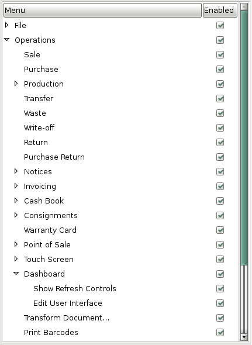
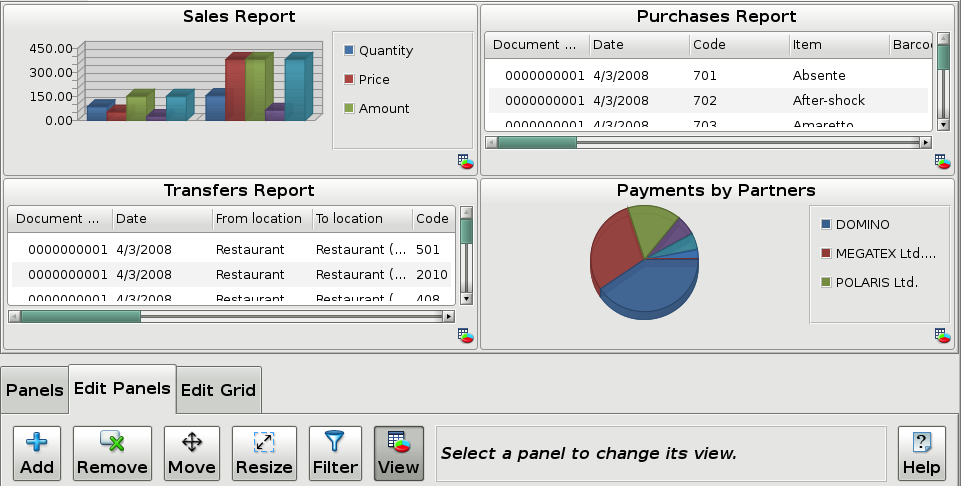
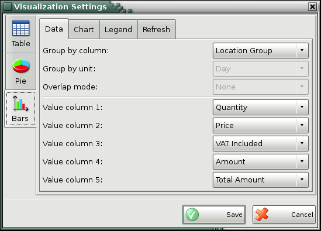
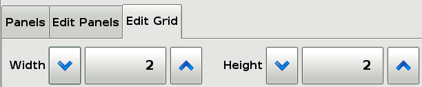
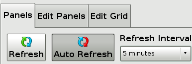

Dashboard
The Dashboard module is the easiest way to display useful information about what is the current or past status of all the main entities in the current database. Using this module you can display all the information available to you by the reports in the Reports menu. You can easily align the data from different reports into separate panels and display it in the way it makes most sense to you.
The Dashboard does not change any data stored in your system, but gives you the best way to display all the information needed for administration and monitoring of all the processes in your store, supermarket or restaurant.
1. Launching
To open the Dashboard window choose from the menu
Operations->Dashboard or choose from the Settings window (Other->Settings
or click the  icon) Special->Startup
page to be Dashboard. In this case every time a user logs in the Dashboard
window will open. This is very useful for back office computers where
administrators or owners need to see the data they need right after they start
their system.
icon) Special->Startup
page to be Dashboard. In this case every time a user logs in the Dashboard
window will open. This is very useful for back office computers where
administrators or owners need to see the data they need right after they start
their system.
2. Configuration
The first time the Dashboard module is used you need to configure which report data you need to be displayed and what filters you need to apply to it. Then you need to choose what type of visualization you want to use in order to display the selected data.
2.1 Permissions
The first time the Dashboard is used it has to be configured. To do that you need to be logged with a user that has the �Operations->Dashboard->Edit User Interface� permission enabled at the �Edit->Administration->Permissions ...� menu as shown below.

The �Edit User Interface� permission allows the user to add, remove or edit how the report data is presented. It is a good practice to remove this permission for regular users that does not need it.

2.2 Panels
To edit the Panels open the �Edit Panels� action tab. From there you can:
- Add a new panel to the screen. Click Add and then click on the place you want to add the panel. After that a screen will let you pick the report to be added. After you select the report and press �OK� you will see a screen that will let you choose all the possible filters for that report, so you can narrow the results as much as you want.
- Remove a panel. Remove a panel by clicking �Remove� and then clicking on the panel that needs to be removed.
- Move a panel. Move or reorganize a panel by clicking �Move� and then dragging the panel to move it to the desired location.
- Resize a panel. Resize a panel by clicking �Resize�, and then change the size of the panels you want by dragging them to the desired size.
- Filter - Change the panel�s filtering options by clicking �Filter�, and then changing the filters available for that report.
- View - Change the panel�s visualization options by pressing �View�, and then changing the available visualization options. You can choose from the different visualization types and change their options in order to display the data you need and exactly the way you want it to look like. The available options for visualization are:

� Table view (the standard view for the reports). You can choose only the columns you want displayed so they fit better on the panel size you choose. You can also choose to have the column totals calculated and displayed at the bottom of the table. Another handy option is to select a custom refresh interval for this panel so it refreshes automatically regardless if a global refresh for all the panels is specified.
� Bar view (a total of 8 styles for displaying data). Display a Bar chart by choosing a column to be used as criteria for grouping together rows from the report result, and one or more value columns to be used for collecting value information that will be summed for all the rows with the same group column. Bars in the Bar chart represent all the groups and their size depends on the summed values of all the rows in that group. If you have selected a column for grouping which contains date information you have also the option to group together the rows that are within the same day, month or year. Another available option in this case is to choose an overlap mode which allows you to stack together groups that are in the same month or year. This is a very handy option to compare statistic information. Another page with settings allows you to choose the style of the bar chart and the 3D look that best fits your needs. You can also choose if you want a legend to be displayed and its position. Another handy option is to select a custom refresh interval for this panel so it refreshes automatically regardless if a global refresh for all the panels is specified.
� Pie view (display a pie chart). Display a Pie chart by choosing a group column to be used as criteria for grouping together rows from the report result, and a value column to be used for collecting value information that will be summed for all the rows with the same group column. Slices in the pie chart represent all the groups and their size depends on the summed values of all the rows in that group. Another page with settings allows you to choose the style of the pie chart and the 3D look that best fits your needs. You can also choose if you want a legend to be displayed and its position. Another handy option is to select a custom refresh interval for this panel so it refreshes automatically regardless if a global refresh for all the panels is specified.
2.3 Editing the grid
Another action tab available is called �Edit Grid�. Inside that tab there are controls to change the width and the height of the respective grid.
In the window this will change the number of spots shown on the screen. This way the space shown can be adjusted so if you want to put more panels you can increase the size if you want to make the panels bigger and you don�t have many panels you can make the grid smaller by reducing the number of rows or columns.

3. Usage
Once the Dashboard module is configured a regular user which does not have the �Edit User Interface� permission can enter the module and start working. When a user does not have the �Edit User Interface� permission enabled the action tabs �Edit Panels� and �Edit Grid� will not be present. This way the user interface is safe from accidental changes and the confusion for users that does not need this functionality is minimized.

3.1 Refreshing panels
To refresh all panels with the latest information in the system press the �Refresh� button in the �Panels� action tab. This action will update all the panels so you can get the latest results available without the need to restart the dashboard.
3.2 Auto refreshing panels
To refresh all the panels periodically press the �Auto refresh� button in the �Panels� action tab and select a refresh interval. This action will allow the dashboard to auto refresh all its panels so you will not need to do this manually. All the panels will be refreshed in the specified interval except the ones with a custom refresh interval (the custom refresh interval can be selected by pressing �View� in the �Edit panels� action tab and pressing the panel and then selecting custom refresh in the �Refresh� tab). This way you can refresh all the panels on a given interval and let some of the panels refresh on a bigger interval (because they are slower to refresh or not likely to change that often) or on a smaller interval (because they are quick to execute and likely to change frequently).
To disable Auto refreshing for all the panels accept the ones with custom refresh press the button �Auto refresh� again.
Note: Refreshing the panels too often can cause overall downgrade of the performance of the whole point of sale network.
�2006-2015 Microinvest, All rights reserved